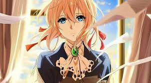

manga
Manga (kanji: 漫画; hiragana: まんが; katakana: マンガ?) es la palabra japonesa para designar las historietas en general.
Fuera de Japón, se utiliza para referirse a las historietas de origen japonés.El manga japonés constituye una de
las tres grandes tradiciones de historietas a nivel mundial, junto con la estadounidense y la franco-belga. Abarca
una extensa variedad de géneros y llega a públicos diversos. Es una parte muy importante del mercado editorial de
Japón y motiva múltiples adaptaciones a distintos formatos: series de animación, conocidas como anime, o de imagen
real, películas, videojuegos y novelas. Cada semana o mes se editan nuevas revistas con entregas de cada serie, al
más puro estilo del folletín, protagonizadas por héroes cuyas aventuras en algunos casos seducen a los lectores
durante años. Desde los años ochenta han ido conquistando también los mercados occidentales.

anime
El anime (en japonés: アニメ )también escrito ánime y animé en español,es un estilo de animación tradicional o por
computadora de origen japonés.En sus inicios, la animación japonesa recibe el nombre de Senga Eiga (literalmente
“películas de líneas dibujadas”), más tarde y, finalmente, sobre 1960 pasará a llamarse "Animeeshon" originalmente
(アニメーション animēshon?). De ahí que se abrevie a «anime» (アニメ). Por otra parte, se cree que es una palabra de origen
francés.El anime es un medio de gran expansión en Japón, siendo al tiempo un producto de entretenimiento comercial
y cultural, lo que ha ocasionado un fenómeno cultural de masas y una forma de arte tecnológico.Está potencialmente
dirigido a todos los públicos, desde niños, adolescentes y adultos; hasta especializaciones de clasificación
esencialmente tomada de la existente para el manga, con clases base diseñadas para especificaciones
sociodemográficos tales como empleados, amas de casa, estudiantes, etc. Suelen tratar sobre sujetos, temas y
géneros tan diversos como el amor, aventura, ciencia ficción, cuentos infantiles, literatura, deportes, horror,
fantasía, comedia y muchos otros.